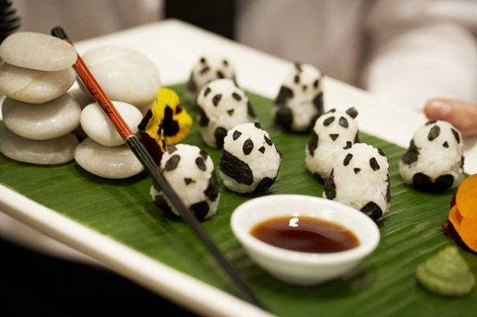

메인으로 이동하기
로제 파스타 만들기
토마토 소스의 새콤 달콤함과 크림 소스의
부드럽고 고소함을 느낄 수 있는 로제 파스타를
간단하게 만드는 방법에 대해 알아볼까요?
- 새우, 마늘, 양파 등의 재료를 기름에 볶으세요
- 끓는 물에 스파게티 면을 넣고 8분 정도 삶으세요
- 볶아놓은 재료와 스파게티 면을 큰 접시에 담은 다음 그 위에
미리 데워놓은 파스타 소스를 부어주세요
※ 스파게티 면은 라면이나 국수보다 잘 익지 않으므로 더 오래 삶아야 합니다. ^^